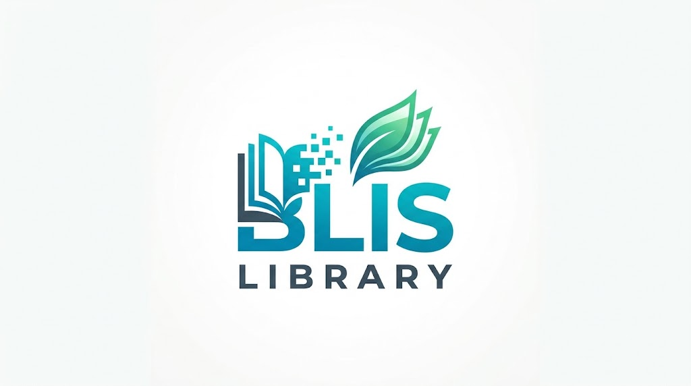

The LCCB Learning Resource Center cordially invites you in the celebration of 𝐍𝐚𝐭𝐢𝐨𝐧𝐚𝐥 𝐋𝐢𝐛𝐫𝐚𝐫𝐲 𝐚𝐧𝐝 𝐈𝐧𝐟𝐨𝐫𝐦𝐚𝐭𝐢𝐨𝐧 𝐒𝐞𝐫𝐯𝐢𝐜𝐞𝐬 𝐌𝐨𝐧𝐭𝐡 and 𝐍𝐚𝐭𝐢𝐨𝐧𝐚𝐥 𝐁𝐨𝐨𝐤 𝐖𝐞𝐞𝐤 𝟐𝟎𝟐𝟔 with the theme “Basa. Salin. Daloy.” This year, the library has prepared four (4) activities where students can join and win exciting prizes. And the best part? All of these activities are fully online which means everyone can participate at their own convenience. That’s right: we’re bringing the celebration straight to your screens (and feeds)! 𝐏𝐨𝐩-𝐔𝐩 𝐐𝐮𝐢𝐳: 𝐁𝐨𝐨𝐤𝐰𝐨𝐫𝐦 𝐄𝐝𝐢𝐭𝐢𝐨𝐧: Test your speed and literary knowledge in our surprise online trivia rounds. (open to Grade 4 to 6 students) 𝐑𝐞𝐚𝐝 & 𝐓𝐞𝐥𝐥: 𝐁𝐨𝐨𝐤𝐓𝐨𝐤 𝐑𝐞𝐯𝐢𝐞𝐰 𝐂𝐡𝐚𝐥𝐥𝐞𝐧𝐠𝐞: Share your favorite book in the library, drop your honest review, and inspire fellow students to read! (open to Grade 4 to 6 students) 𝐁𝐨𝐨𝐤 𝐂𝐨𝐯𝐞𝐫 𝐌𝐚𝐤𝐢𝐧𝐠 𝐂𝐨𝐧𝐭𝐞𝐬𝐭: Channel your inner graphic artist and design your own book cover about LCCian folklore (open to High School students) 𝐊𝐮𝐰𝐞𝐧𝐭𝐨𝐧𝐠 𝐋𝐢𝐛𝐫𝐚𝐫𝐲: 𝐓𝐢𝐤𝐓𝐨𝐤 𝐋𝐢𝐛𝐫𝐚𝐫𝐲 𝐏𝐫𝐨𝐦𝐨𝐭𝐢𝐨𝐧 𝐂𝐡𝐚𝐥𝐥𝐞𝐧𝐠𝐞: Create a short, engaging video showing off your anecdotes about the library. (open to College students) Ready to jump in? Read the mechanics below and show us what you’ve got